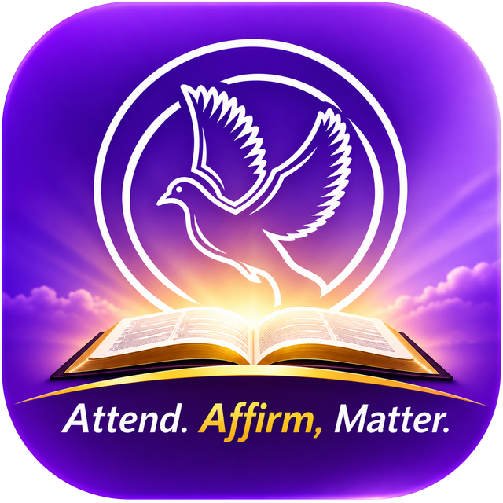

Bible Study
God will keep you in UPSHIFTS
The King James Bible with word studies, reading plans, a sermon workshop, the audio Bible and Kingdom Games. It works without internet, and updates itself when you are online.
Download for Android Download for Windows Android: version 7 or newer. When your phone asks, allow installing from your browser, then open the downloaded file.Windows: Windows 10 or 11. If Windows shows “Windows protected your PC”, choose More info, then Run anyway.